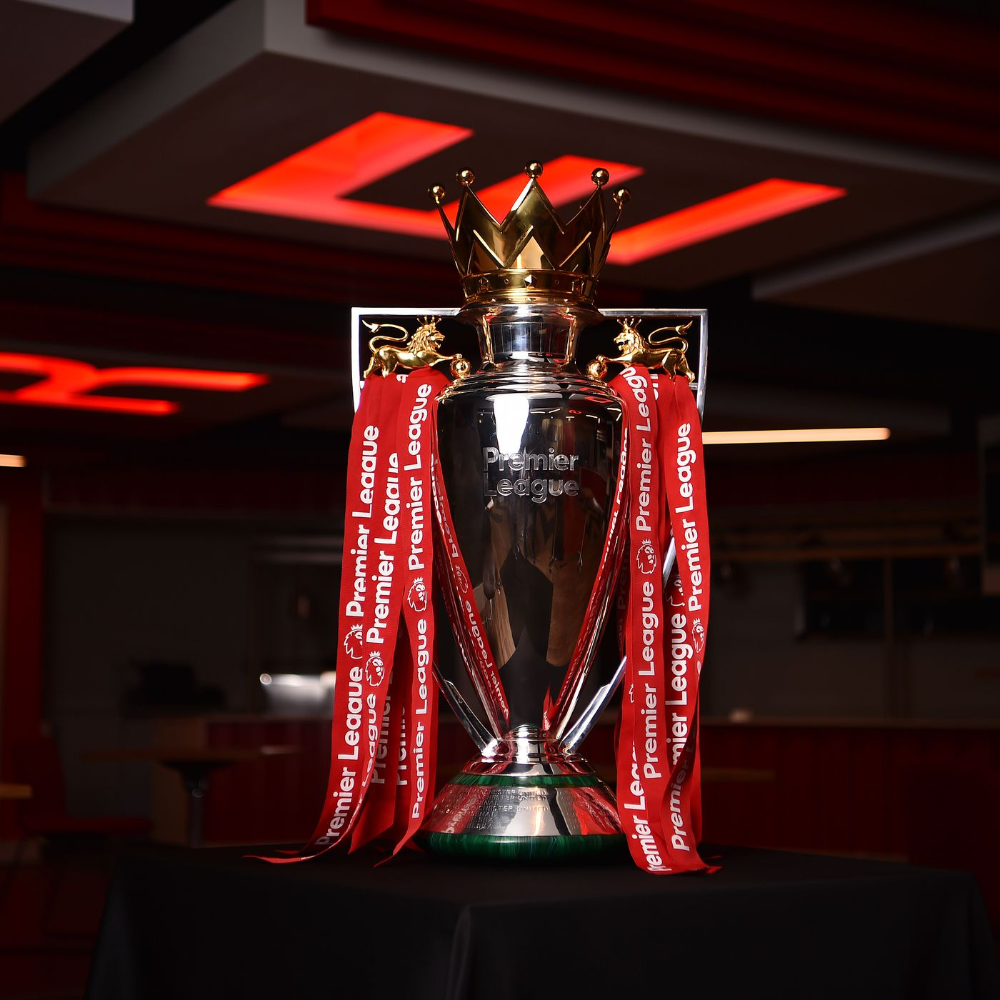
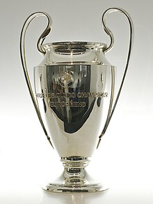
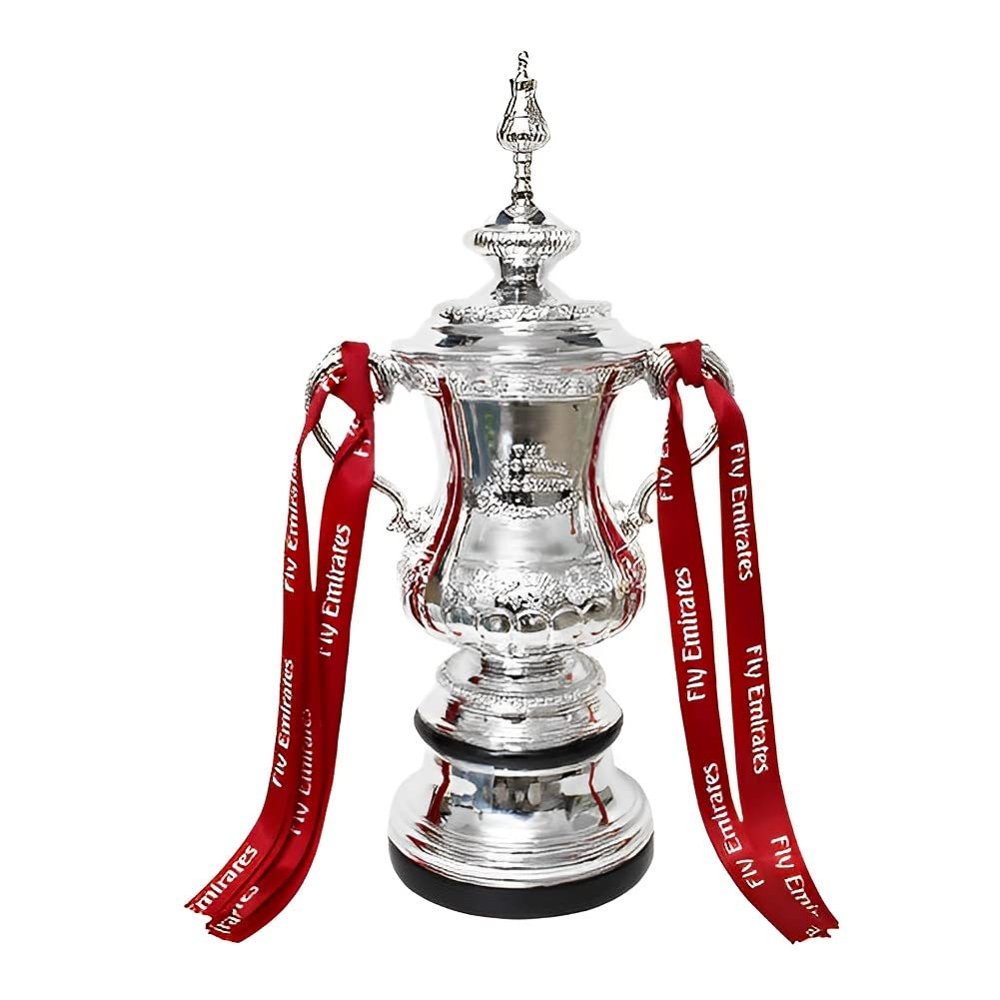
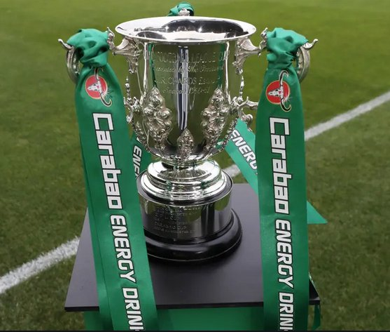

Championnats d'Angleterre
19 fois Champions, avec la dernière durant la saison 2019/2020

Champions League
6 fois vainqueur de la Champions League, 3ème club le plus titré de la compétition

FA CUP
8 FA CUP dans leur histoire, avec la dernière remporté en 2022

Coupe de le Ligue
Liverpool a reçu ce trophée 9 fois depuis sa création